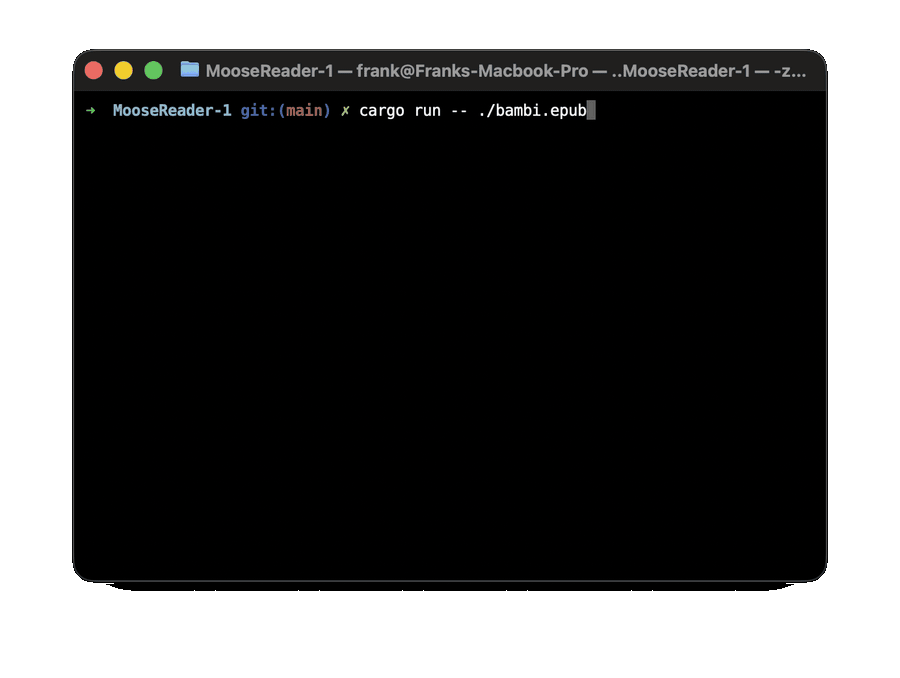
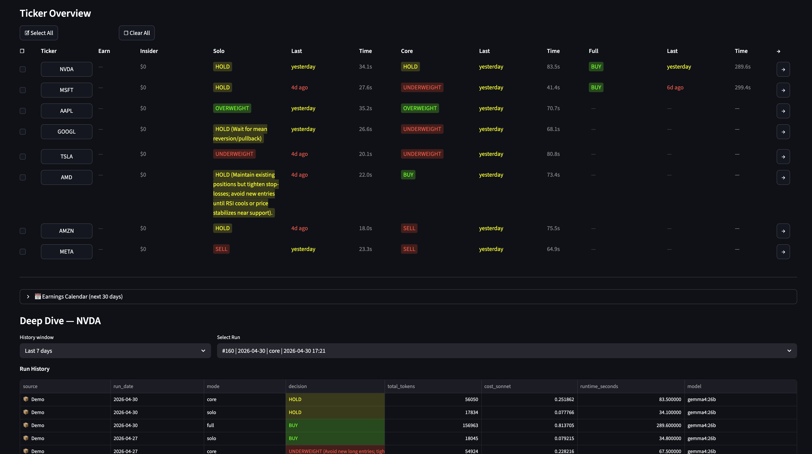
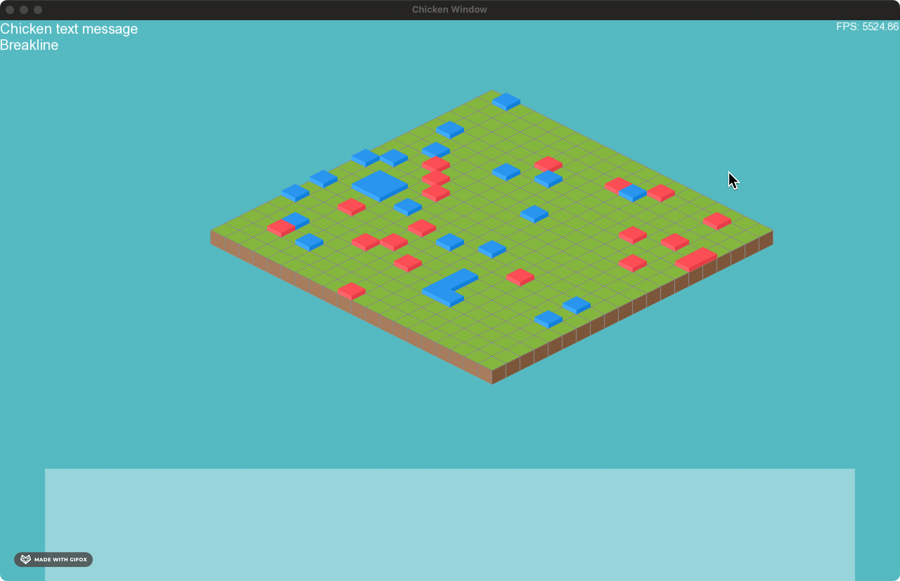
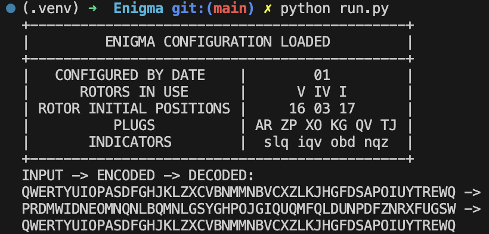
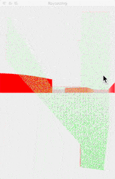
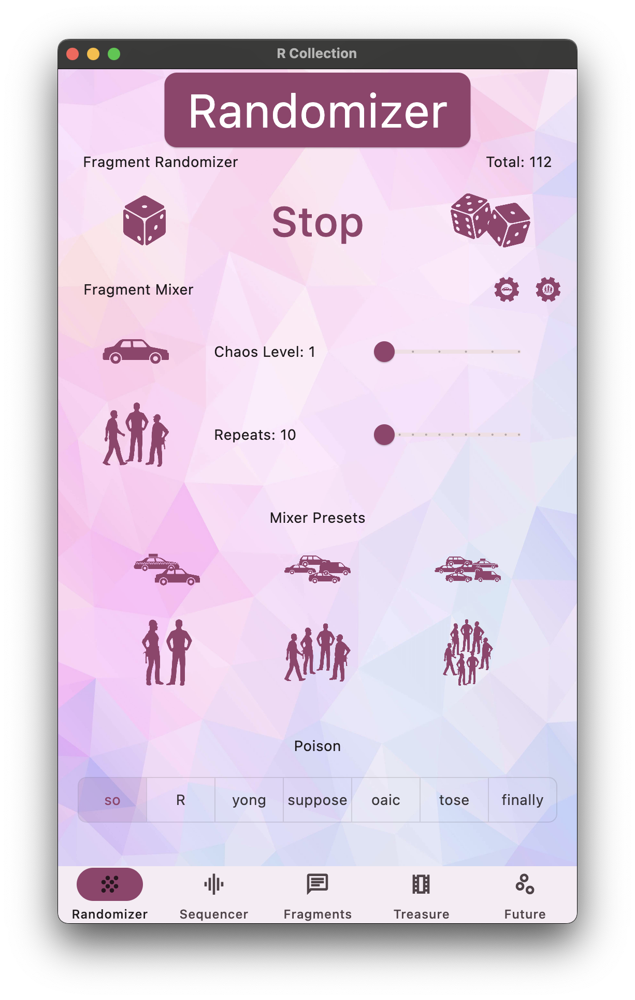
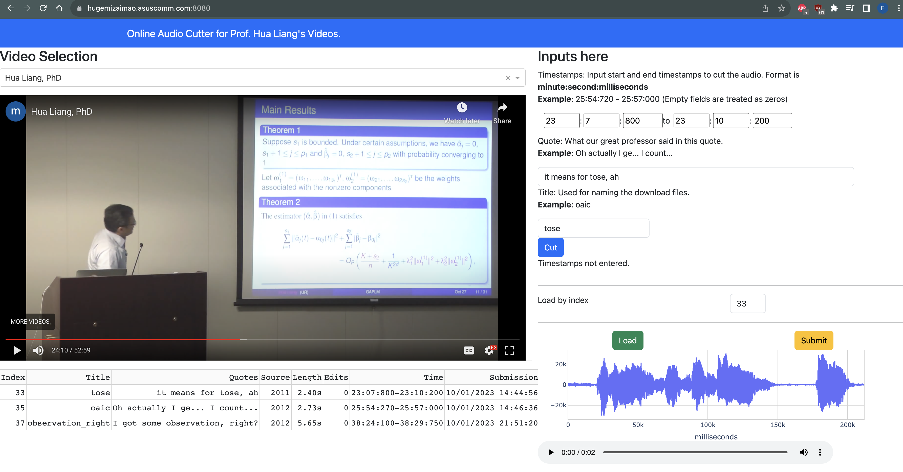

Tinkering
§ Personal · Outside the day job
The stuff I build for the fun of figuring it out — generative models, retro computing, game engines, agentic AI, terminal toys, and the homelab work that supports it all.
For professional work, see Work.
Music generation transformer
Decoder-only generative transformer in PyTorch — small enough to be readable, big enough to learn something interesting. Dual-modality: text tokenizer for language modeling, MIDI tokenizer for music generation. Trained on Bach’s Goldberg Variations and The Well-Tempered Clavier.
MooseReader
A featherweight terminal EPUB reader in Rust — keyboard-driven (h j k l), TrueColor themes (Dracula, Nord, Solarized, Catppuccin, Gruvbox), and percentage-based bookmarks. No electron shell, no heavyweight TUI framework — single-digit-megabyte footprint.

Multi-agent stock analysis pipeline
Multi-mode stock analysis dashboard built around an adversarial three-stage pipeline (analyst → challenger → synthesizer). Runs on locally hosted Gemma via Ollama for $0/run; an optional 7-agent debate via TradingAgents handles the highest-fidelity mode. Every run journaled to SQLite — full prompts, token cost, runtime, and decision rationale per run.

Isometric tiles
A Game-of-Life-inspired tile simulation. Blue and red blocks move, multiply, and decay over an isometric grid. Written in Python first, then ported to C++ for larger grids and faster step rates.

Enigma machine emulator
Object-oriented Python 3 emulation of the Enigma M3 cipher machine, with rotors, reflectors, and the plugboard modeled as first-class classes. Settings are reproducible — encrypt-then-decrypt round trips verify cleanly.

Raycasting renderer
A from-scratch raycasting renderer in Python and PyQt5 — the rendering technique behind Wolfenstein 3D (1992). Casts rays per pixel column over a 2D map and computes wall heights from intersection distance.

Unreal Engine cutscene experiment
A video cutscene and physics-driven object-movement experiment in Unreal Engine 4.22, with raytracing enabled. Built from royalty-free assets — the focus was the scripting and rendering pipeline rather than original art.
Soundboard app
A cross-platform soundboard with audio mixing, shuffling, video playback, and motion control. Started as a Swift 5 iOS prank; rewritten in Flutter to ship the same UI on macOS, Windows, and Linux from one codebase.

Online audio cutter
A small Dash web service that extracts audio clips from pre-defined videos by time interval. Built to feed source material into the Soundboard app without round-tripping through a desktop editor.
